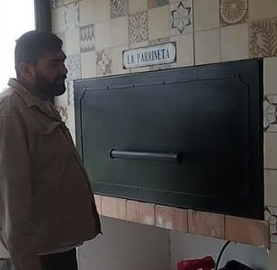
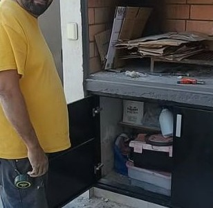
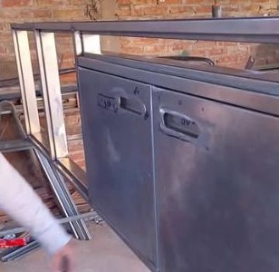
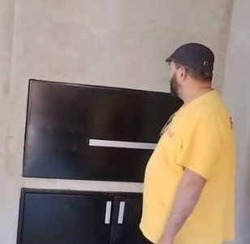
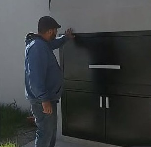
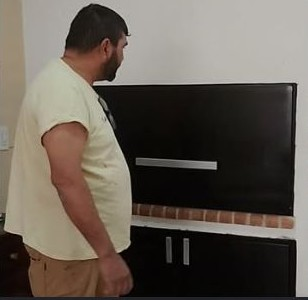
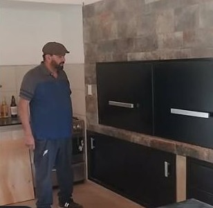

El hierro y
las brasas.
Puertas pantográficas para parrillas, frentes metálicos y cerramientos bajo mesada.
Una parrilla que también luce cerrada.
Una manija horizontal recorre el frente. Al abrirlo, quedan a la vista la boca de la parrilla y su interior. Las puertas inferiores permiten aprovechar el espacio bajo la mesada.
Explorar servicios →Del taller al fuego.
Trabajos realizados
Abrí cada imagen para ver el trabajo en el reel original.

Frente de parrilla con manija horizontal ↗
Interior de parrilla y espacio inferior ↗
Puertas metálicas bajo mesada ↗
Frente negro en quincho ↗ Detalle de apertura del frente ↗
Detalle de apertura del frente ↗
Conjunto con puertas inferiores ↗
Vista del frente abierto ↗
Frente de parrilla sobre pared revestida ↗